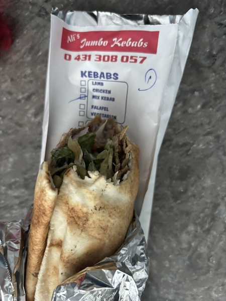
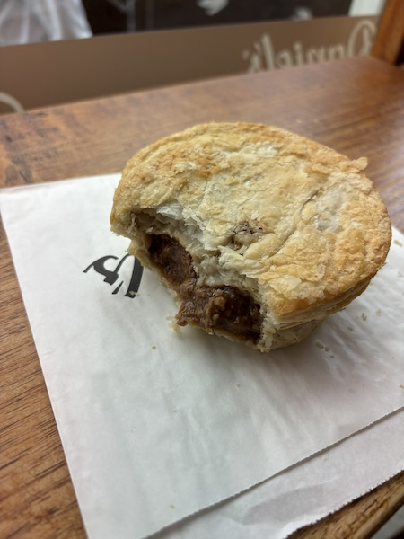
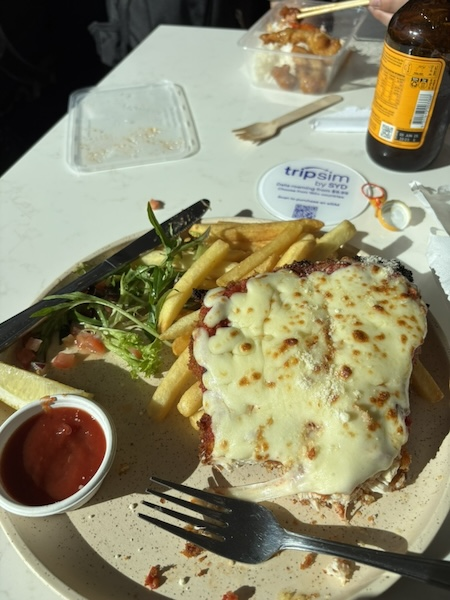
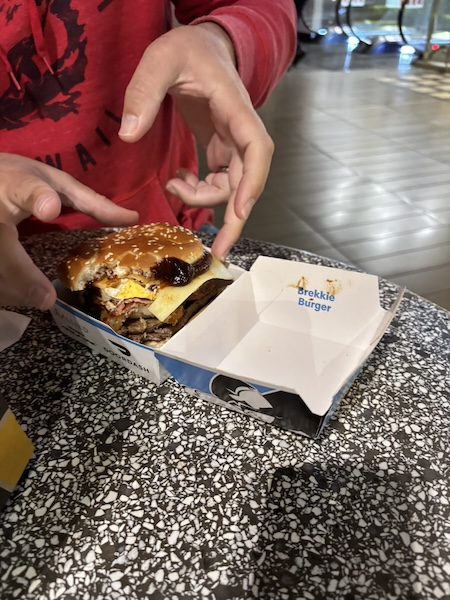

Food Found in Melbourne
Mebourne is a place filled with people who have immigrated from many different countries. Therefore, we found food from many different backgrounds. Here are some of the things we tried:
Turkish Kebabs
Beef Pie (Britain, Aussie, New Zealand)
Chicken Parma (Parmesan) with Chips- Aussie
Brekkie Burger (American with Aussie twist)
We also really enjoyed eating Greek Gyros (with different sauces), Italian Pasta and Cannolis, Australian-style Chicken (Red Rooster) and Pizza, Vietnamese Phô, Japanese Tempanyaki, Fish and Chips, and more!